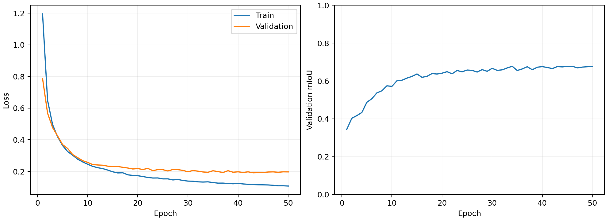
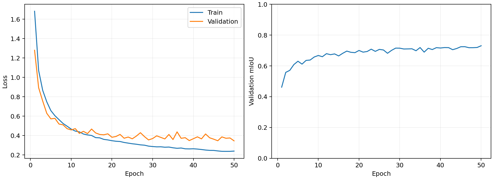
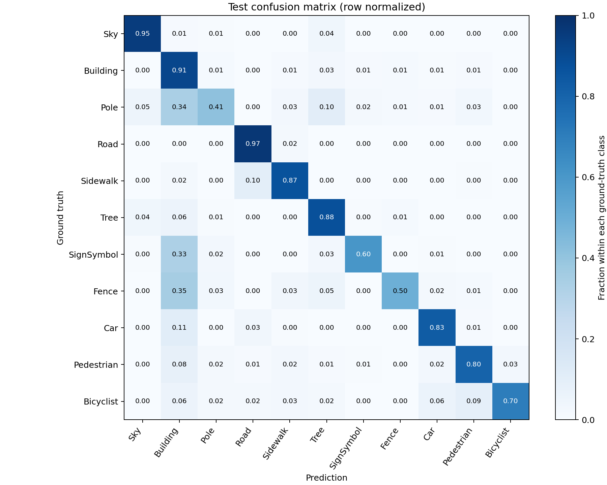

| 原图 | GT |
|---|---|
 |  |
《图像处理与分析》课程设计报告｜完成日期：2026-10-19
本项目围绕街景图像的逐像素语义分割，构建基于 SegFormer-B0 的可追溯训练、评价与离线推理流程。采用固定来源的 CamVid 11 类数据，训练/验证/测试划分为 367/101/233 张，模型从固定版本 ImageNet MiT-B0 编码器和新建 11 类分割头独立初始化。首先完成数据增强与 CE+Dice 的四组对照，再开展 512×512 分辨率和训练频率类别加权扩展，并对最终两种方案使用三个固定种子复核。在共同的 384×384 标签评价网格上，seed=42 的 E0/E3/E4/E5 Test mIoU 分别为 59.25%/61.42%/64.29%/64.92%。三种子 E4/E5 的 Test mIoU 均值分别为 63.88%/64.39%，加权方案在两对种子中更好、一对中更差，平均收益较小。项目同时完成本地上传演示与 FP32/FP16 推理基准，实测当前实现的 FP16 更省显存但没有加速。结果支持分辨率与类别监督值得关注，同时保留随机性、数据规模和测试集使用方面的限制。
关键词：语义分割；SegFormer-B0；CamVid；类别加权；可重复实验
语义分割为图像中的每个有效像素分配类别，能够表达道路、建筑、车辆和行人等区域及其边界。与仅判断图像类别的分类任务相比，它要求模型同时保留空间结构和语义信息。本课程设计的目标是完成一个结果可信、能够离线使用的街景分割项目，并用受控对照解释简单训练策略的实际影响。
本项目的实现工作包括数据与标签审计、预训练载入核验、成对增强、损失与混淆矩阵、验证选模、完整轮次恢复、自动归档、多种子配对统计及本地推理。SegFormer 架构属于原论文贡献；数据增强、Dice 与类别加权属于已有训练方法，本项目将它们用于课程对照，不作为新的算法发明。
SegFormer 采用分层 Transformer 编码器和轻量 All-MLP 解码器，聚合多尺度特征用于密集预测；本项目选择其中 B0 规模。该结构与方法出处见 SegFormer 原论文。实现使用固定版本 Transformers，四级特征通道为 32、64、160、256，各级深度为 2，解码隐藏维度为 256；这些设置由载入检查核对，完整分割模型参数量为 3,716,971。
模型输入图像后输出低分辨率 11 类 logits，训练与评价均先双线性插值到标签网格，设 align_corners=False。评价在插值后取 argmax，避免先硬分类再缩放丢失分数信息。初始化使用 nvidia/mit-b0 模型卡 所述的 ImageNet 编码器，固定 revision 为 80983a413c30d36a39c20203974ae7807835e2b4；分割头为本项目新建，所有参数参与微调。载入仅允许移除原分类器的两项权重，其他缺失、额外键或形状不符直接报错。
评价采用整个划分累计的混淆矩阵，行表示 GT、列表示预测。每类 IoU_c = TP_c / (TP_c + FP_c + FN_c)，mIoU 为有效类 IoU 的均值；像素准确率为有效像素中预测正确的比例。255 像素不参与损失和混淆矩阵。分母为零的类写为 null 并排除，而本次验证和测试的 11 类均有有效统计。道路等大类对像素准确率贡献较大，因此项目主要依据 mIoU 判断整体验证表现，并同时检查每类指标。
原始 CamVid 提供驾驶场景的逐像素语义标注，其原始类别体系与本项目使用的第三方 11 类索引整理不同，数据背景及引用要求见 Cambridge CamVid 页面。本项目固定使用 lih627/CamVid 的 79ae0071a75d90331a62b5a2aaf6d53cc69fd9f6 版本，读取其三个清单和 CamVidGray，不混用其他来源的划分或 32 类 RGB 标签。完整审计确认 367 张训练、101 张验证、233 张测试，原图与标签均为 960×720，没有缺失配对和审计错误。
有效标签为 0–10，依次为 Sky、Building、Pole、Road、Sidewalk、Tree、SignSymbol、Fence、Car、Pedestrian、Bicyclist；0 为有效天空类，不执行 reduce_labels。索引 PNG 保留原始 ID；图像用双线性、mask 用最近邻缩放，图像按 ImageNet mean/std 归一化。原图 4:3 被拉伸为方形输入，这一几何改变作为限制保留。
实测环境为 Windows 11、Python 3.12.3、PyTorch 2.3.1（CUDA 构建 11.8）、Transformers 4.44.1、NumPy 1.26.4、Pillow 10.4.0，GPU 为 RTX 4060 Laptop、约 8 GiB、驱动 576.02。环境原记录为 environment.json。正式运行前完成逐文件/清单哈希、划分隔离、类别编码检查、真实批次参数更新和固定 20 张训练样本学习诊断；合成检查没有被作为真实数据验收。
所有正式运行使用 batch=4、AdamW、学习率 6e-5、weight decay=0.01、50 轮、固定学习率及 CUDA AMP。每组独立设置种子，再从同一预训练编码器和新建头开始。训练集随机打乱；验证和测试没有随机增强，以 FP32 评价。每轮按最高验证 mIoU 保存 best，完整 checkpoint 另存模型、优化器、AMP scaler、各随机状态、数据加载器状态和历史，以最后完整轮次恢复。正式测试在训练结束和验证选模之后执行，已有同一权重的已完成测试记录在恢复时复用。
E0 为 384×384、CE；E1 仅启用概率 0.5 的同步水平翻转和 brightness/contrast/saturation 各 0.2 的轻量颜色增强；E2 仅加入 0.5 Dice；E3 同时启用增强与 CE+0.5 Dice。翻转对图像和 mask 共享决定，颜色变化只作用图像。Dice 在批次与空间维度累计 softmax 和 one-hot 的重叠，仅对该批 GT 出现的类平均，忽略像素先屏蔽；CE 与 Dice 均在 FP32 计算。全 ignore 批次不更新参数。
E4 沿用 E3，仅将输入和训练标签提高为 512×512；验证/测试标签直接从原始 mask 缩放到 384×384，保持与 E0–E3 的共同口径。E5 沿用 E4，仅将 CE 改为类别加权 CE。权重只统计 367 张未增强训练 mask 在 512×512 下的有效像素，先取频率的逆平方根，除以类别均值后截断至 [0.5,3.0]；加权 CE 的分母为有效像素权重之和。实际 Pole、SignSymbol、Pedestrian、Bicyclist 权重分别为 1.4318、1.3163、1.6985、2.6397，完整计数与权重见 results/stage6/class_weights.json。两组 Dice 定义不变。
训练 loss 日志保留按批次有效像素数加权的均值，组合损失的 Dice 保留批次口径；E5 加权 CE 的日志也不是整个划分以权重和归一化的精确 CE。不同损失、不同训练网格的原始 loss 不直接比较。E4 增加了每步像素数，虽轮数和 batch 相同，不能称为等算力对照。
下表每组 seed=42，标签评价网格统一为 384×384。相对变化单位为百分点；best 轮次只按验证 mIoU 决定。
| 实验（seed=42） | 训练输入 | 最佳轮次 | Val mIoU | Test mIoU | Test 像素准确率 | Test 较 E0 / pp |
|---|---|---|---|---|---|---|
| E0_baseline | 384×384 | 34 | 67.76% | 59.25% | 89.77% | +0.00 |
| E1_augmentation | 384×384 | 46 | 68.92% | 60.25% | 89.78% | +1.00 |
| E2_dice | 384×384 | 46 | 69.34% | 60.73% | 89.69% | +1.48 |
| E3_combined | 384×384 | 48 | 71.00% | 61.42% | 90.03% | +2.17 |
| E4_resolution | 512×512 | 50 | 72.88% | 64.29% | 90.94% | +5.04 |
| E5_weighted | 512×512 | 50 | 73.06% | 64.92% | 90.71% | +5.67 |
E1 和 E2 相对基线均有提高，E3 在原四组中验证指标最高；这一结论来自预先设置的四组对照，不意味着增强或 Dice 对每个类别都有效。E4 相对 E3 的 Test mIoU 增加 2.87 个百分点，E5 相对 E4 增加 0.63 个百分点。E5 的测试像素准确率相对 E4 下降 0.24 个百分点，说明提升 mIoU 同时存在类别取舍。
| 类别 | E0 Test IoU | E3 Test IoU | E4 Test IoU | E5 Test IoU |
|---|---|---|---|---|
| Sky | 91.33% | 91.32% | 92.01% | 91.99% |
| Building | 80.43% | 80.93% | 82.89% | 82.42% |
| Pole | 15.91% | 20.42% | 23.48% | 26.29% |
| Road | 92.62% | 92.96% | 93.31% | 93.09% |
| Sidewalk | 76.28% | 77.97% | 79.85% | 79.15% |
| Tree | 75.01% | 76.17% | 77.15% | 77.43% |
| SignSymbol | 36.64% | 39.21% | 43.85% | 45.56% |
| Fence | 32.14% | 28.58% | 37.16% | 34.94% |
| Car | 74.33% | 76.63% | 77.43% | 77.39% |
| Pedestrian | 39.20% | 42.92% | 50.29% | 51.12% |
| Bicyclist | 37.84% | 48.52% | 49.74% | 54.70% |
E5 相对 E4 的单种子测试 Bicyclist、Pole、SignSymbol 分别改善 4.95、2.81、1.71 个百分点，Fence 下降 2.22 个百分点。E5 的验证 Pole/SignSymbol 改善 2.24/2.57 个百分点，而 Pedestrian 下降 0.48 个百分点。这支持类别加权对部分弱类有帮助，但不支持所有小目标均改善的结论。


两张曲线的 loss 定义不同，不能比较纵轴大小。E0 的最佳轮次为 34；E5 的最佳轮次为 50。最佳点位于预算末端提示训练预算仍可作为后续变量，但不能仅凭这一点断言训练不足。

归一化混淆矩阵的每一行表示某个真实类别被预测成各类别的比例，它不是每类 IoU。部分细杆与标志物被建筑或植被吞并是值得观察的误差形式；类别频率、分辨率与边界信息可能共同作用，本实验没有分离这些机制的独立贡献。
固定种子为 42、2024、3407，seed=42 复用原归档；新增四次训练均为 50 轮。保持原 E4/E5 实现不变，配对同一种子下所有初始参数与 buffers 的 SHA256 完全一致。不同种子的完整初始哈希不同。各次仍以最高验证 mIoU 选权重，统计不是最后一轮的简单比较。
| 方案 | 种子数 | Val mIoU 均值±std | Test mIoU 均值±std | Test 像素准确率均值 |
|---|---|---|---|---|
| E4 | 3 | 72.47% ± 0.47 pp | 63.88% ± 0.79 pp | 90.83% |
| E5 | 3 | 72.70% ± 0.40 pp | 64.39% ± 0.55 pp | 90.49% |
| 种子 | E5−E4 Val / pp | E5−E4 Test / pp |
|---|---|---|
| 42 | +0.184 | +0.629 |
| 2024 | -0.303 | -0.564 |
| 3407 | +0.811 | +1.459 |
std 为样本标准差（ddof=1），不是均值置信区间。E5 的配对 Val/Test 差值均值为 +0.231/+0.508 个百分点，对应差值 std 为 0.558/1.017 个百分点。两对种子中 E5 更高、一对中更低，因而结论是平均小幅改善并伴随种子波动，不能宣称统计显著或每次稳定提高。三个种子的变化也不包含测试场景抽样不确定性。
最终按三种子平均最佳验证 mIoU 选择 E5。部署代表在运行前已约定使用胜出方案原 seed=42 的最佳模型，不按 Test 挑种子，也没有模型集成。代表模型的单次 Test mIoU=64.92% 与三种子 Test 均值=64.39% 是两个不同统计量。
以下两个样本来自预先固定的六个测试清单位置；展示 E0/E5 在同一图像上的输出，保留 GT 供对照。展示图为原始 960×720 网格，定量评分仍为 384×384，不能将展示图解读为原尺度评价成绩。样本不能代表整套数据，也不能只凭视觉判断指标高低。
| 原图 | GT |
|---|---|
| |
| E0 预测 | E5 预测 |
|---|---|
 |  |
从配对预测可见，E5 的左侧杆状结构比 E0 更连续，右侧还保留了一个较小的人物区域；同时建筑和植被边界仍有碎片。这里是图像观察，没有为单张示例另算分数。
| 原图 | GT |
|---|---|
 |  |
| E0 预测 | E5 预测 |
|---|---|
 |  |
这一例仍有明显细节失败：GT 中细枝之间的天空间隙在预测中被较大的植被区域填充，部分杆和标志物轮廓增粗，右侧远处人物未被完整分开。主体道路分出不代表复杂边界已恢复。
观察时重点对照道路/人行道分界、杆状物连续性、远处行人与车辆轮廓。表中 Pole 与 Fence 等类别的 IoU 仍偏低，说明主体区域能够被识别并不等于细节已经可靠。失败样本的保留有助于避免只展示容易图像带来的偏差；实际误差应以整划分指标和逐像素 GT 为依据。
本地推理仅加载完成归档且权重哈希相符的模型，图像经过相同预处理，logits 上采样到原图尺寸后输出索引图、彩色图与半透明叠加图。交互演示提供图片上传、E0/E4/E5 权重选择、FP32/FP16 选项、类别图例、图片流程延迟和结果下载；默认使用最终 E5 代表模型及 FP32，监听本机回环地址。页面基于 Python 标准库 HTTP 与本地 HTML，不新增框架依赖，命令为 python demo/app.py，浏览器访问 http://127.0.0.1:8765。

界面截图为一次示例预测，首次运行的显示耗时不是下文同步预热基准，不能直接比较。
下表是 E4 同一 checkpoint 的实际基准，而非 E5 基准。精度检查使用全部 101 张验证图像、batch=4；模型计时使用 batch=1、512×512 常驻 GPU 输入，包含 forward、FP32 插值到 384×384 和 argmax，排除 I/O、预处理和传输。先预热 20 次，再同步 CUDA 测量 100 次。图片流程另外使用前十张验证图各三次，含读图、预处理、传输、原尺寸输出和着色叠加，不含模型加载与保存文件。
| E4 推理精度 | Val mIoU | 模型均时 / ms | 模型 P95 / ms | 模型 FPS | 图片流程均时 / ms | allocated 峰值 / MiB |
|---|---|---|---|---|---|---|
| fp32 | 72.88% | 21.14 | 23.37 | 47.30 | 92.61 | 325.09 |
| fp16 | 72.88% | 25.25 | 28.33 | 39.60 | 94.89 | 228.52 |
FP16 指 CUDA autocast，权重仍为 FP32，后处理转为 FP32。其验证 mIoU 相对 FP32 变化 +0.0038 个百分点；当前实现的均时加速比为 0.84×，没有获得速度收益。较低 allocated 峰值不等于 GPU 总占用。默认保留本次较快的 FP32，但这次桌面硬件测量不能外推到其他设备、batch 或优化后的推理实现。
每个运行目录保留实际配置、环境、源码哈希、训练 CSV、best/last、验证与测试结果、混淆矩阵及预测样本；正式训练使用系统锁，拒绝静默覆盖。全局种子、数据加载器 Generator 和恢复时的 RNG 状态被保存，CUDA 算子的已知非确定性采用 warn_only，因此不承诺跨设备逐位相同。
本地提交包包含源文件、协议、数值归档、必要示例和十次运行的最佳权重，不包括完整 CamVid、预训练缓存和体积更大的最后训练状态。MANIFEST.json 给出文件字节数与 SHA256；复核脚本验证模型与结果身份、配对统计及本地离线预测。纯净训练目录由打包工具单独创建，不复制已有实验结果，避免初次训练命令碰到交付归档而拒绝覆盖。完整命令和取得数据/权重的方法见 docs/reproduction.md。
报告数字由 delivery/build_report.py 从真实归档生成，图像原文件与复制件的哈希记入 reports/report_evidence.json。原始环境、模型来源、数据来源和第三方许可说明保留；本项目没有把数据整理仓库的许可自动当作原始 CamVid 图像或预训练模型许可。
项目完成了数据正确性检查、基线训练、增强与损失对照、分辨率与类别权重扩展、三种子复核，以及本地图片推理和效率测量。单种子上，E3 相对 E0 提高了 mIoU，E4 的分辨率扩展带来进一步收益，E5 的加权监督改善部分弱类；多种子结果表明 E5 相对 E4 的平均收益较小并存在波动。工程上，FP16 的显存下降没有自动转化为速度提升，实际测量比预期假设更有价值。
局限包括数据量较小、只有三个复核种子、方形拉伸与 384×384 评价网格可能弱化细节、训练轮数相同不代表计算量相同，以及单设备性能结果。每次训练过程中 Test 不参与轮次选择，但扩展实验在已经查看历史测试结果后开展，所以整个项目不能宣称最终测试集完全未见，也不能将课程结果与不同来源/分辨率的论文榜单直接比较。
后续可在预先冻结的新协议下验证更长训练预算、保持长宽比的裁剪/填充、独立未见数据与更多种子，也可将 ONNX 或视频流作为扩展。本次交付不自动追加这些实验，不把常规训练策略包装成新算法。
参考资料用于结构与数据背景；所有本项目性能数字均来自随附实验文件，而非文献成绩。